My Thesis
This page describes my final-year thesis for my engineering degree, which can be download at: Thesis
Skills Demonstrated:
- Designed and trained deep learning models (3D CNNs) for medical image registration and deformation field prediction.
- Implemented multi-stage image registration pipelines combining classical methods (ANTs affine registration) with deep learning-based deformable registration.
- Developed custom data pipelines and generators for efficient training on 3D volumetric medical imaging datasets.
- Applied advanced data augmentation techniques (elastic deformations, affine perturbations) for robust deep learning training.
- Optimized neural network architectures and training procedures using TensorFlow/Keras, including custom loss functions and regularization strategies.
- Worked with multi-modal medical imaging data (MRI and ultrasound) and addressed challenges in cross-modality registration.
- Implemented and evaluated quantitative performance metrics including Dice coefficient, Hausdorff distance, and target registration error (TRE).
- Used classical medical image processing tools (ANTs, NiftyReg concepts) alongside deep learning frameworks.
- Performed systematic experimentation, hyperparameter tuning, and ablation studies to improve model performance.
- Developed reproducible machine learning workflows including preprocessing, training, evaluation, and visualization of results.
- Handled large 3D datasets efficiently using caching, preprocessing pipelines, and optimized memory usage.
- Communicated technical findings through scientific writing, figures, and experimental analysis.
Summary Slides:
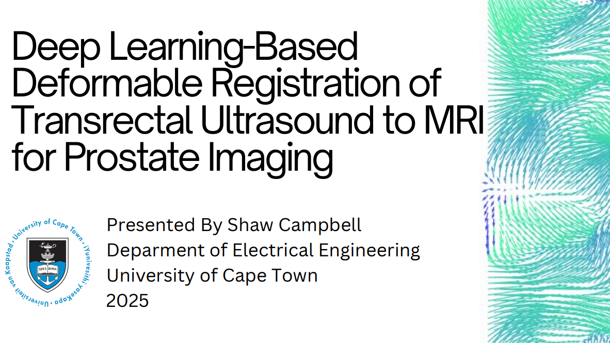


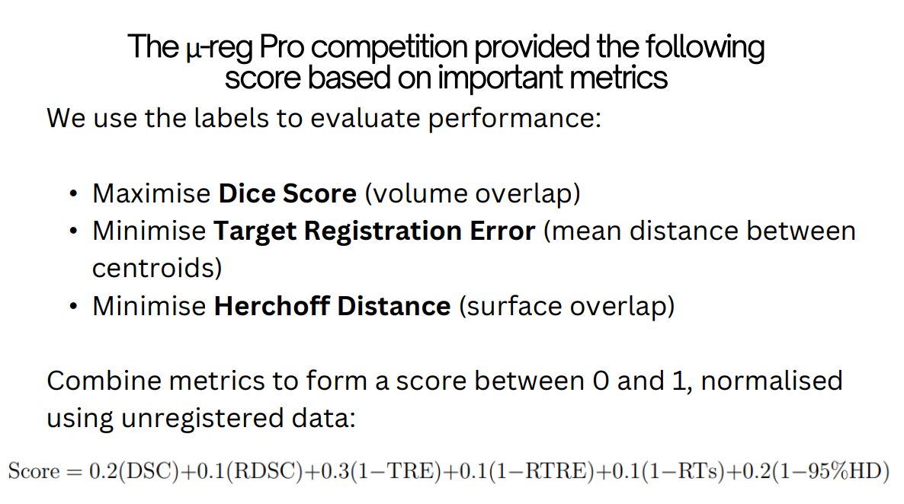
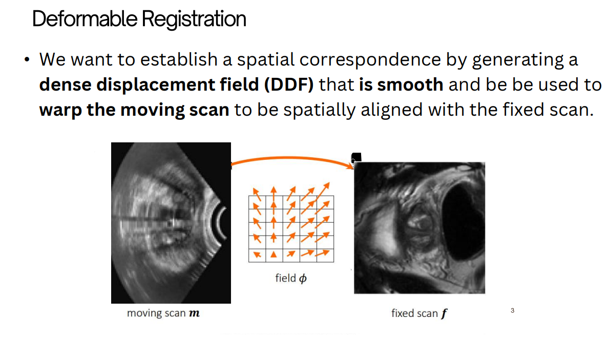
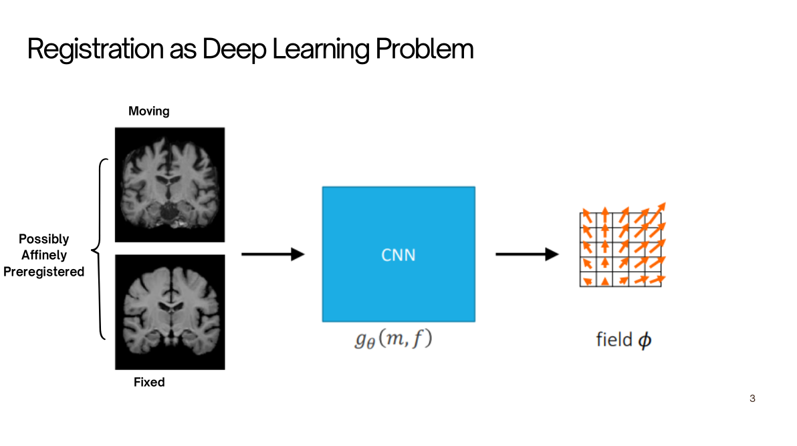
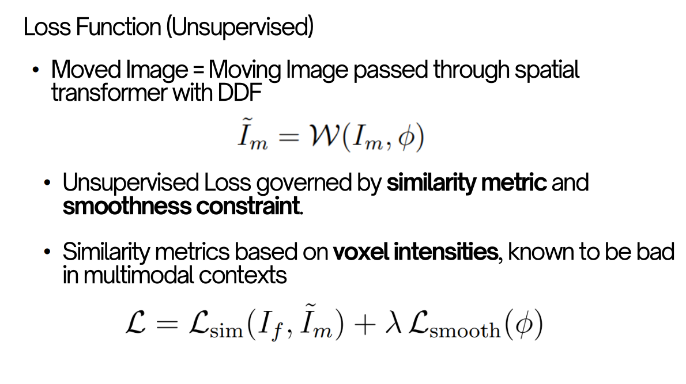
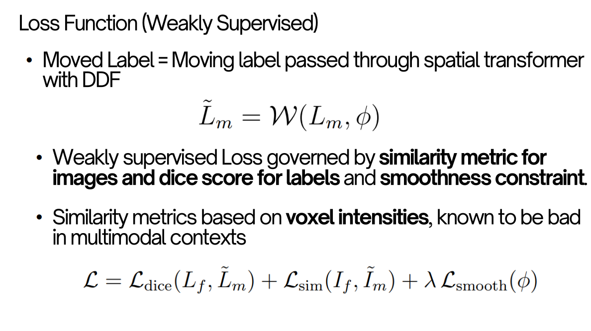


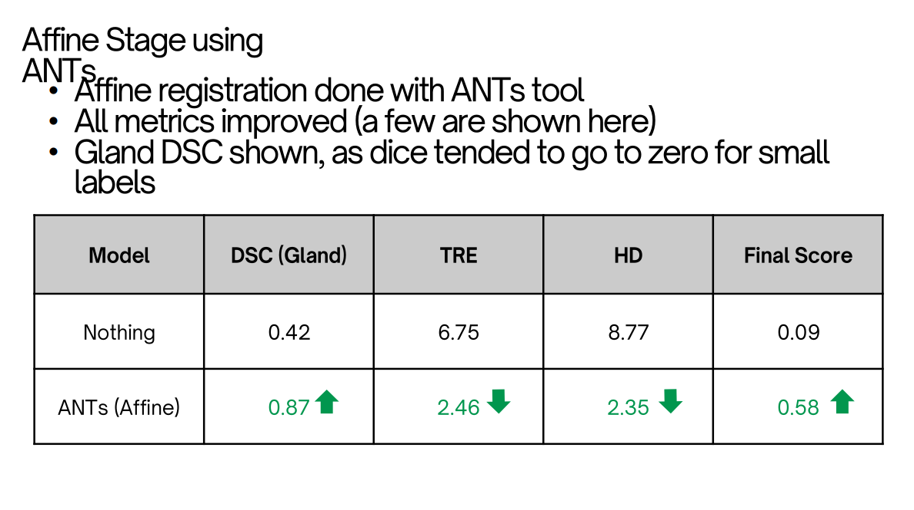


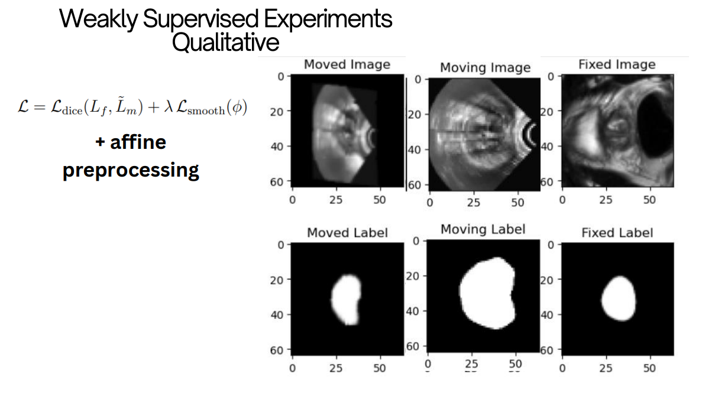
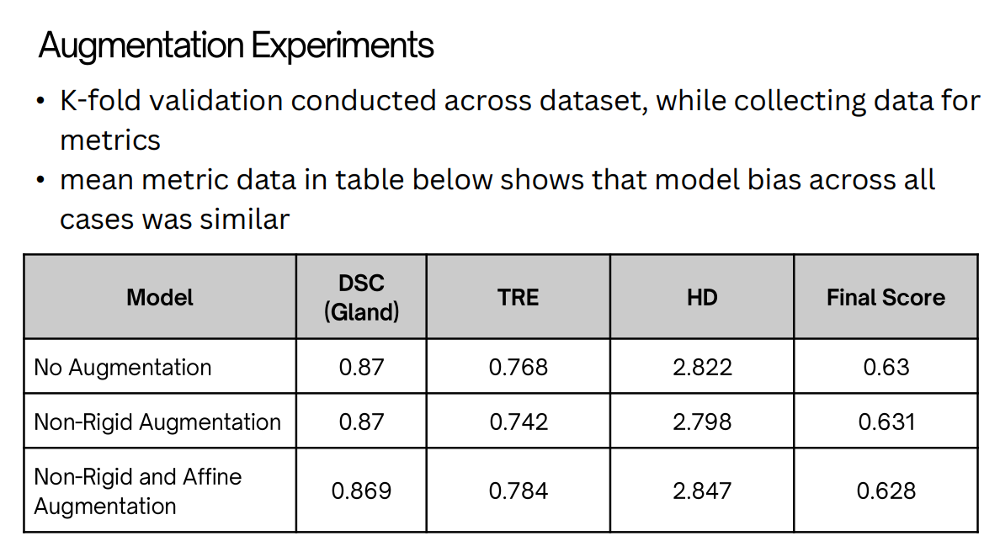
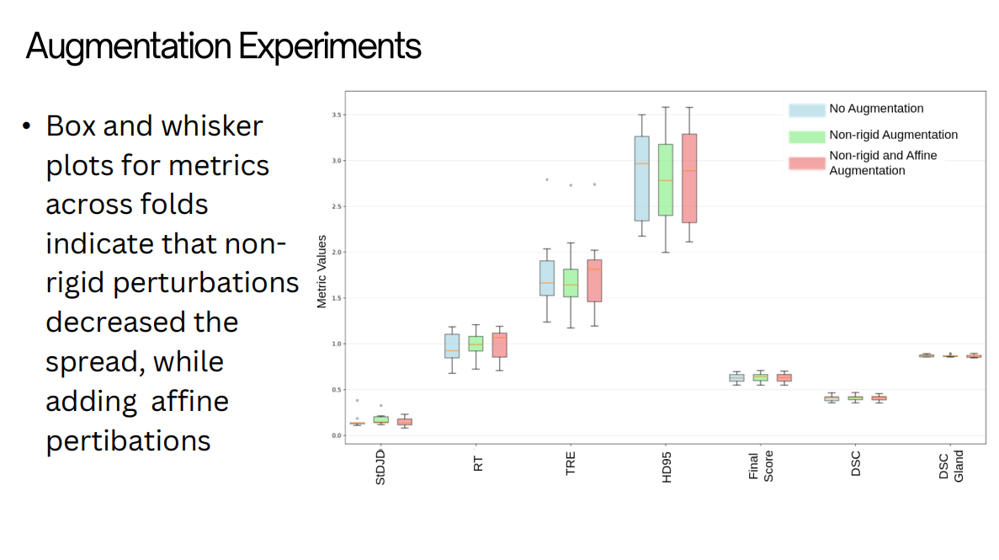
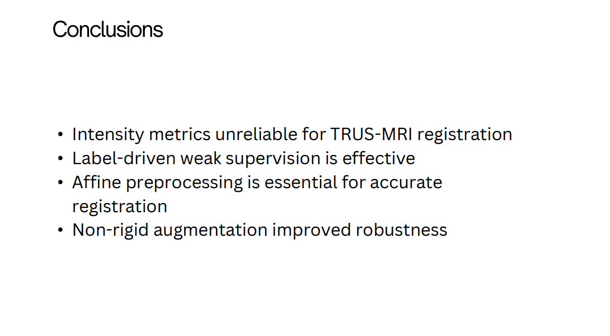